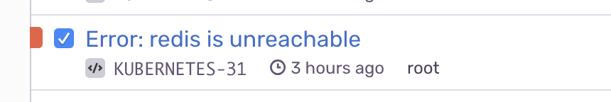

Kubernetes gives many choices for monitoring and service/deployment metrics.
One type of metric that it does not give is the ability to determine if a kubernetes Deployment or Pod is online inside the cluster's network, such as a database only accessible by the cluster's IP.
Kubernetes health checks work for kubernetes deployments, but not for external services such as MemoryStore, Redis, or Tile38.
Once configured Kubecat will send error reports to Sentry.io
Installation
Create a ConfigMap with the kubecat config. There are several core modules including a generic HTTP module for sending health pings and requests to services.
apiVersion: v1
kind: ConfigMap
metadata:
name: kubecat-config
data:
kubecat-config.yaml: |
reporters:
- name: redis
module: "Redis"
interval: 120 # time in seconds
options:
url: "redis://redis"
timeout: 30 # time in secondsCreate a Deployment to run the kubecat monitor
Replace the SENTRY_DSN value with your Sentry DSN
apiVersion: extensions/v1beta1
kind: Deployment
metadata:
name: kubecat
spec:
template:
metadata:
labels:
app: kubecat
spec:
containers:
- image: "stevelacy/kubecat:latest"
env:
- name: SENTRY_DSN
value: "<Sentry DSN Here>"
name: kubecat-container
volumeMounts:
- name: kubecat-config
mountPath: /app/config.yaml
subPath: config.yaml
volumes:
- name: kubecat-config
configMap:
name: kubecat-config
items:
- key: kubecat-config.yaml
path: config.yamlKubecat also supports URL params from your environment, use the env:<ENV> prefix as follows:
env:
- name: SENTRY_DSN
value: "Sentry DSN"
- name: REDIS_URL
valueFrom:
secretKeyRef:
name: env
key: REDIS_URLAnd in your kubecat ConfigMap:
- name: redis
module: "Redis"
interval: 60 # time in seconds
options:
url: "env:REDIS_URL"It will mount the ConfigMap to the Pod's container with the volumeMounts. Any changes to the ConfigMap will require the Deployment to be updated to point to the new config.
Once online it will send a health check request to the URL and will alert you when the service is unreachable.
